1 开始使用
无论你想用 Scribble 做什么,最好先从生成一些简单的 HTML 和/或 PDF 文档开始。 本章向你介绍了基础知识,最后在 接下来的步骤 中提出了如何继续的具体目标建议。
1.1 第一个例子
创建一个文件 "mouse.scrbl" ,内容如下:
#lang scribble/base @title{On the Cookie-Eating Habits of Mice} If you give a mouse a cookie, he's going to ask for a glass of milk.
第一行的 #lang scribble/base 表示该文件实现了一个 Scribble 文档。 文件以 "文本模式 "开始, @ 符转义到操作符,如 title, 大括号为操作符的参数返回到文本模式。 剩下的就是文档内容了。
现在运行 scribble 命令行程序,为你想输出的文档类型指定一个模式:
- 运行scribble mouse.scrbl来生成 HTML,即 "mouse.html" 。你可能会注意到,"he’s" 中的撇号变成了一圈撇号。
- 运行scribble --htmls mouse.scrbl来生成 HTML,即 "mouse/index.html" 。 分节(我们接下来要添加)将作为单独的 HTML 文件出现在 "mouse" 目录下。
- 运行scribble --pdf mouse.scrbl来生成 PDF 文件 "mouse.pdf" 。 这只有在你安装了 pdflatex 后才能工作。 如果你想看中间的 Latex 文件,请尝试scribble --latex mouse.scrbl生成 "mouse.tex" 。
关于 scribble 命令行工具的更多信息,见 运行 scribble 。
1.2 多个部分
在 "mouse.scrbl" 中添加更多的文字,使它看起来像这样:
#lang scribble/base @title{On the Cookie-Eating Habits of Mice} If you give a mouse a cookie, he's going to ask for a glass of milk. @section{The Consequences of Milk} That ``squeak'' was the mouse asking for milk. Let's suppose that you give him some in a big glass. He's a small mouse. The glass is too big---way too big. So, he'll probably ask you for a straw. You might as well give it to him. @section{Not the Last Straw} For now, to handle the milk moustache, it's enough to give him a napkin. But it doesn't end there... oh, no.
现在,在论文的第一段之后,我们有两个小节,每个小节都是通过调用 section 来生成小节声明的。 第一个子节有两个段落。 第二节,由第二个 section 调用的结果启动,有一个段落。
再次运行 第一个例子 中的 scribble 命令。 你可能会注意到输出中的卷曲双引号,以及 --- 变成了一个 em 破折号。
1.3 分割文档源
当一个文件变大时,最好将各部分分割成独立的源文件。 include-section 操作将一个由 ".scrbl" 文件定义的文档并入一个更大的文档。
要把这个例子的文件分割成多个文件,把 "mouse.scrbl" 改成只有
#lang scribble/base @title{On the Cookie-Eating Habits of Mice} If you give a mouse a cookie, he's going to ask for a glass of milk. @include-section["milk.scrbl"] @include-section["straw.scrbl"]
在与 "mouse.scrbl" 相同的目录下创建 "milk.scrbl" 和 "straw.scrbl" 。 将以下放入 "milk.scrbl" 中
#lang scribble/base @title{The Consequences of Milk} That ``squeak'' was the mouse asking for milk...
将以下放入 "straw.scrbl" 中
#lang scribble/base @title{Not the Last Straw} For now, to handle the milk moustache, ...
注意,新文件都以 #lang 开头,就像原始文件一样,原始文件中的 section 在新文件中成为 title 。 "milk.scrbl" 和 "straw.scrbl" 都是有自己的标题的文件,它们可以用 scribble 单独呈现。 同时,在 "mouse.scrbl" 上运行 scribble ,将小的文档合并成一个与之前相同的文档。
1.4 文档样式
Scribble 目前只支持一种形式的 HTML 输出。 你可以为生成的页面替换 "scribble.css" 文件,仅此而已。 (我们期望在将来增加更多的样式)。
对于基于 Latex 的 PDF 输出,Scribble 包括对多种页面布局配置的支持。 到目前为止, "mouse.scrbl" 例子使用的是默认的 Latex 样式。 如果你打算把论文提交给一个关于编程语言的研讨会,那么–嗯,你可能需要一个不同的主题。 但你可以通过将第一行改为
#lang scribble/acmart
来开始使当前的内容看起来正确。
如果你想写 Racket 库的文档,可以试着把第一行改成
#lang scribble/manual
这将产生一个单独的标题页的输出,该页的初始内容(作为文档的简要介绍),以及顶级的章节,每个章节都在一个新的页面上开始。 如果你把文件分成了多个文件,主文件的第一行决定了输出格式。
使用 scribble/acmart 或 scribble/manual 不会改变文档的 HTML 渲染– 除了 scribble/manual 增加了一个版本号,但它会改变文档主体中可用的绑定集。 例如,用 scribble/acmart, 介绍性的文字可以被标记为摘要:
#lang scribble/acmart @title{On the Cookie-Eating Habits of Mice} @abstract{If you give a mouse a cookie, he's going to ask for a glass of milk.} @section{The Consequences of Milk} ....
当渲染成 HTML 时,摘要会显示为一个插入的段落。 如果你试图用 scribble/base 或 scribble/manual 语言使用 abstract , 那么你会得到一个错误,因为 abstract 没有定义。
当一个文件在多个文件中实现时,改变主文件的语言可以设置所有部分的样式,但它不会将绑定引入其他部分文件。 例如,如果你把 "mouse.scrbl" 的语言改为 scribble/acmart, 那么 abstract 在 "mouse.scrbl" 中变得可用, 但在 "milk.scrbl" 或 "straw.scrbl" 中则不可。 换句话说,运算符名称是有词法范围的。
1.5 更多的函数
scribble/base 语言提供了一个基本操作的集合( scribble/acmart 和 scribble/manual 都是 scribble/base 的超集)。 许多操作是你可以应用于文本的样式变化:
He's a @smaller{small mouse}. The glass is too @larger{big}---@bold{way @larger{too @larger{big}}}. So, he'll @italic{probably} ask you for a straw.
渲染为
He’s a small mouse. The glass is too big—
way too big. So, he’ll probably ask you for a straw.
正如你所期望的那样,对 smaller,larger 和 bold 等函数的调用可以嵌套在其他调用中。 它们也可以嵌套在对 title 或 section 的调用中:
@section{@italic{Not} the Last Straw}
1.5.1 居中
centered 操作是将文本流居中:
If a mouse eats all your cookies, put up a sign that says @centered{ @bold{Cookies Wanted} @italic{Chocolate chip preferred!} } and see if anyone brings you more.
它显示为
If a mouse eats all your cookies, put up a sign that saysCookies Wanted
Chocolate chip preferred!
and see if anyone brings you more.
1.5.2 边距注释
margin-note 操作的使用方法类似,但渲染的文本会被移到页边。 如果你使用 margin-note, 那么内容就会显示在这里。
1.5.3 项目化
itemlist 操作创建了一连串的项目文本, item 操作将文本分组,以出现在一个项目中。 itemlist 操作与我们之前看到的其他操作不同,因为它只接受 item 产生的值而不是任意的文本。 这个区别反映在 itemlist 的参数使用 [...] 而不是 {...}:
@centered{@bold{Notice to Mice}} @itemlist[@item{We have cookies for you.} @item{If you want to eat a cookie, you must bring your own straw.}]
它显示为
Notice to Mice
We have cookies for you.
If you want to eat a cookie, you must bring your own straw.
1.5.4 表格
tabular 函数接收一个列表,将其组织成一个二维表格。 默认情况下,列与列之间不加间隔,所以提供一个 #:sep 参数作为列的分隔符。例如、
@tabular[#:sep @hspace[1] (list (list @bold{Animal} @bold{Food}) (list "mouse" "cookie") (list "moose" "muffin"))]
显示为
Animal
Food
mouse
cookie
moose
muffin
1.6 文本模式与参数的 Racket 模式
当 [...] 围绕着一个操作的参数时,参数表达式处于 Racket 模式而不是文本模式。 即使在 Racket 模式下, @ 也可以用来应用操作; 一旦通过 scribble/base 这样的语言启用 @ 语法(而不是 racket), 它在 Racket 模式和文本模式下的行为是一样的。
对 itemlist 的参数使用 Racket 模式的一个好处是, 我们可以向 itemlist 传递一个带关键字的可选参数。 特别是,如果你想要一个带有数字而不是子弹的列表, 可以使用 #:style 关键字向 itemlist 提供 'ordered 的样式:
@itemlist[#:style 'ordered @item{Eat cookie.} @item{Drink milk.} @item{Wipe mouth.} @item{...}]
一个操作并不关心它是和 [...] 或 {...} 一起使用。 粗略的说, {...} 形成的参数是一个字符串。(不过只是粗略的。 换行符或在 {...} 中使用 @ 会使情况复杂化,我们很快会回到这个问题上)。所以、
@italic{Yummy!}
相当于
@italic["Yummy!"]
相当于 Racket 表达式
(italic "Yummy!")
这些等价关系解释了为什么 Scribble 函数是用 Racket 符号来记录的。 如果你是以 HTML 格式阅读的,你可以点击上面的 italic 来访问其文档。 这些文档还不能完全理解,但在本章结束时就会理解了。
如果你想在文本模式下提供参数,但你也想提供其他可选参数,怎么办? 你可以同时使用 [...] 和 {...} 进行操作, 只要 [...] 在前,并且在结束的 ] 和开始的 { 之间没有字符分隔。 例如,调用 italic 与使用 elem 的 'italic 样式是一样的:
@elem[#:style 'italic]{Yummy!}
你也可以同时 省略 [...] 和 {...} 。 在这种情况下, @ 后面的 Racket 表达式被直接使用,而不是作为一个操作应用。比如说
1 plus 2 is @(number->string (+ 1 2)).
渲染成
1 plus 2 is 3.
需要调用 number->string ,因为裸露的数字作为文档内容是无效的。
1.7 @ 语法基础知识
Scribble 提供的 @ 符号只是写 Racket 表达式的另一种方式。 Scribble 文档可以使用正常的 Racket 符号,完全不使用 @ ,但这对大多数用途来说是不方便的。 @ 符号使处理文本内容更容易。
不管是在文本模式还是Racket模式下,文档中的 @ 提供了一个转义到 Racket 模式的机会。 @ 的基本语法是
@ ‹cmd› [ ‹datum›* ] { ‹text-body› }
其中 @ 后面的三个部分都是可选的,但至少有一个必须存在。它们之间不允许有空格
@ 和 ‹cmd›, [ 或 {
‹cmd› 和 [ 或 {; 或
] 和 { 。
‹cmd› 或 ‹datum› 是正常的 Racket 符号,而 ‹text-body› 本身是文本模式的。 一个 ‹cmd› 显然不能以 [ 或 { 开始,即使 Racket 形式可以以这些字符开始。
将 @‹cmd› 扩展为 Racket 代码的方法是
‹cmd›
当使用 [ ] 或 { } 时,扩展为
(‹cmd› ‹datum›* ‹parsed-body›*)
其中 ‹parsed-body›* 是 ‹text-body› 的解析结果。 ‹parsed-body›* 部分往往会变成一串 Racket 字符串。
在实践中, ‹cmd› 通常是一个 Racket 标识符,它被绑定到一个过程或句法形式。 如果程序或表单期望进一步排版文本,那么 {...} 就提供文本。 如果表单期待其他数据,通常用 [...] 来包围 Racket 参数。 即使一个操作的参数是一个字符串,如果该字符串不用作内容文本(而是用作例如超链接标签), 那么该字符串通常通过 [...] 而不是 {...} 提供。 有时, [...] 和 {...} 都会被使用, 前者围绕在要排版的文本之前的 Racket 参数。 最后,如果一个表单是一个纯粹的 Racket 级别的表单,没有排版的结果,比如 require 导入更多的操作,那么通常只使用 @ 。
例如,文本模式下的流
@(require scriblib/figure) @section[#:tag "poetry"]{Of Mice and Cookies} See @secref["milk"]. @section[#:tag "milk"]{@italic{Important} Milk Supplies} @figure["straw" @elem{A straw}]{@image["straw.png"]}
相当于 Racket 模式的序列
(require scriblib/figure) "\n" "\n" (section #:tag "poetry" "Of Mice and Cookies") "\n" "See " (secref "milk") "." "\n" "\n" (section #:tag "milk" (italic "Important") " Milk Supplies") "\n" (figure "straw" (elem "A straw") (image "straw.png")) "\n"
除了展示不同的参数约定是如何用于不同的操作外, 上面的例子还说明了在 Racket 形式的文本模式流中是如何保留空白的–包括保留为自己的字符串的换行符。 注意第二个 section 的内容是如何得到两个参数的, 因为源流中 section 的参数内容包括使用一个操作符和额外的文本。 当像 section 或 italic 这样的操作接受要排版的内容时,它通常接受任意数量的参数,这些参数共同构成内容。
除了命令的作用外, @ 后面还可以跟上 ; 来开始一个 comment 。 如果 ; 后面的字符是 {, 那么注释将运行到匹配的 },否则注释将运行到行末:
@;{ ‹comment› } @; ‹line-comment›
关于 @ 的语法的更多信息,见 @ 语法 。 完整的语法还包括一些细节,比如像 |{...}| 这样的大括号用于文本模式的参数, 同时在大括号之间禁用 @ 。
1.8 解码序列
在一个以 #lang scribble/base 开头的文档中, 顶层是一个文本模式流,就像 @ 表格中的 ‹text-body› 一样。 正如上一节所说明的,这样的顶层序列对应于 Racket 模式的字符串和操作应用的混合物。 有一个隐含的操作,即 decode, 它包装了整个文档,以消耗这种字符串和其他值的混合物,并将它们变成文档描述。
decode 操作实现了 flow decoding, 它采取了一个文档流,并将其分割成若干部分和段落。 空行为段落划界, title 和 section 等操作的结果产生 "这里是标题 "或 "一个新的章节从这里开始 "的声明,并被 decode 所识别。
一个不同但相关的 content decoding 发生在一个段落或章节的标题内。 内容解码负责将 --- 转换为 em 破折号,或将 " 和 ' 转换为合适的大括号。
文档流的解码过程最终是由启动文档的 #lang 行决定的。 scribble/base, scribble/manual 和 scribble/acmart 语言都使用相同的 decode 操作。 然而, scribble/text 语言更像一个纯文本生成器和预处理器,它不执行任何此类解码规则。 (关于 scribble/text 的更多信息, 见 Scribble as Preprocessor。)
更确切地说,像 scribble/base 这样的语言只有在从文档流中抬出所有定义和导入后才会应用 decode 。
当使用流解码器时,在它把输入流分成段落后,它对段落内的字符串应用内容解码。 然而,当内容被一个操作包裹时,内容解码并不自动应用。 一个操作负责在它认为合适的时候调用一个内容或流解码器。大多数操作都会调用解码器; 例如, italic, bold, smaller 等都会对其参数进行解码。 同样地, title 和 section 对标题或章节名称的给定内容进行解码。 然而, literal 和 verbatim 操作符不对给定的字符串进行解码。例如、
@verbatim{---}
显示为
---
不要将解码与 @ 符号的扩展混淆。 源格式
@verbatim{@(number->string (+ 1 2))}
显示为
3
因为源码等同于
(verbatim (number->string (+ 1 2)))
其中 (number->string (+ 1 2)) 被评估以产生 verbatim 的参数。 |{...}| 风格的括号经常与 verbatim 一起使用, 因为 |{...}| 禁用参数的 @ 符号。 例如、
@verbatim|{@(number->string (+ 1 2))}|
显示为
@(number->string (+ 1 2))
1.9 图片
任何可转换为图片的值都可以在 Scribble 文档中直接使用。 例如,来自 pict 和 2htdp/image 库的函数可以生成图片。 例如、
@(require pict) This cookie has lost its chocolate chips: @(colorize (filled-ellipse 40 40) "beige").
显示为
This cookie has lost its chocolate chips: .
1.10 接下来的步骤
如果你的直接目标是记录 Racket 库或编写识字程序,请跳到 开始使用文档 , 然后再回到 @ 语法 和其他章节中。
如果你对编写与 Racket 无关的文档更感兴趣,请继续看 @ 语法 ,然后再看 高级别的 Scribble API 。 当你需要更多的力量时,可以转到 低级别的 Scribble API 。
如果你对文本生成和预处理感兴趣,请继续学习 @ 语法 , 然后转到 Scribble as Preprocessor 。